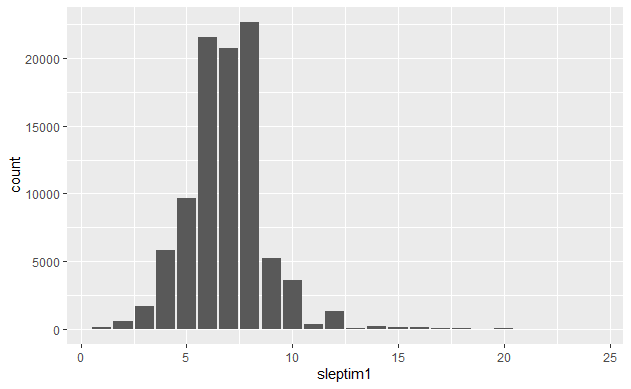
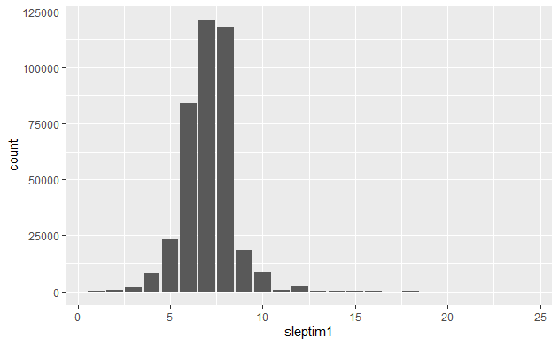
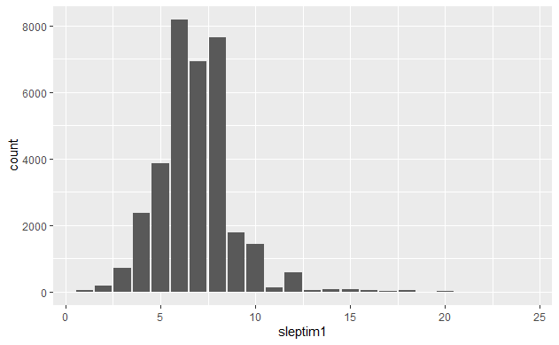
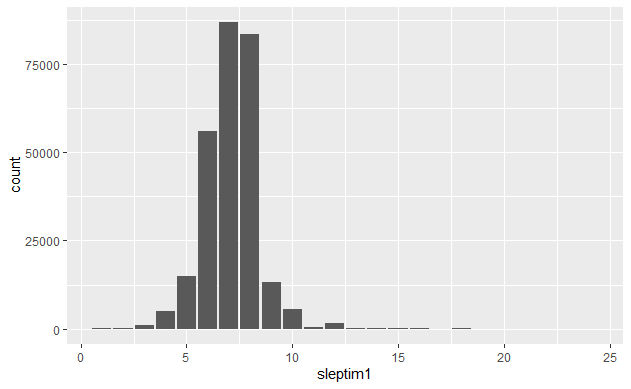
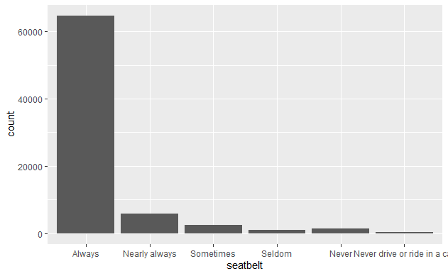
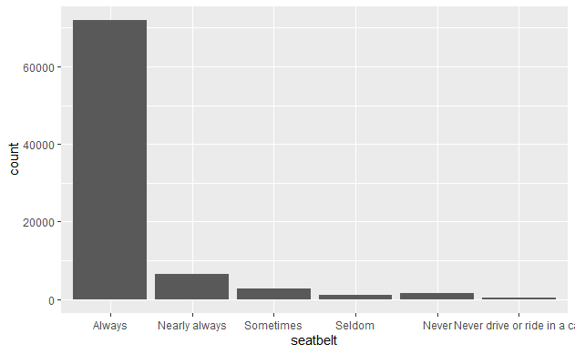

---
title: "Exploring the BRFSS data"
output:
html_document:
fig_height: 4
highlight: pygments
theme: spacelab
---
## Setup
### Load packages
```{r load-packages, message = FALSE}
library(ggplot2)
library(dplyr)
```
### Load data
```{r load-data}
load("brfss2013.RData")
```
* * *
## Part 1: Data
My research is based on observations from The Behavioral Risk Factor Surveillance System (BRFSS) - 2013. Data are taken from the database brfss2013.RData. BRFSS collects uniform, country-specific data on preventive health practices and risk behaviors associated with chronic diseases, injuries, and preventative infectious diseases that affect the adult population. BRFSS conducts surveys by telephone. Interviewers collect data from a randomly selected adult in the household. The health characteristics used to measure BRFSS apply to adults over the age of 18 living in the United States.
* * *
## Part 2: Research questions
**Research quesion 1:**
1. Does the presence of a depressive state (variable addepev2) in a person depend on the number of hours of sleep (variable sleptim1)?
Insomnia and lack of sleep have a negative effect on human well-being. The question is whether it can be concluded that this will provoke a depressed state.
**Research quesion 2:**
2. Is there a relationship between lack of sleep, weight and depression?
We wonder if depression and obesity affect a person's sleep.
**Research quesion 3:**
3.Does poor physical or psychological health affect the use of seat belts behind the wheel of a depressed person?
Feeling unwell can be distracting and distracting. The question is whether this will affect compliance with basic safety rules while driving.
* * *
## Part 3: Exploratory data analysis
**Research quesion 1:**
```{r count}
brfss2013 %>%
group_by(sleptim1) %>%
summarise(count = n())
```
```{r count}
brfss2013 %>%
group_by(addepev2) %>%
summarise(count = n())
```
This code shows the relationship between the amount of sleep and the number of people with depression. Looking at the histogram, we see that most addepev2 == "Yes" sleep an average of 6-8 hours, which is the norm.
```{r }
q1<-brfss2013 %>%
filter(!is.na(sleptim1),!sleptim1=='103', addepev2=="Yes") %>%
group_by(sleptim1,addepev2) %>%
summarise(count = n())
ggplot(data = q1, aes(x = sleptim1 , y =count)) + geom_col()
```

For comparison, consider the same histogram, only with addepev2 == "No" and see that the trend persists. Therefore, from this study we can not conclude that the amount of sleep affects the presence or absence of depression in humans
```{r }
q1<-brfss2013 %>%
filter(!is.na(sleptim1),!sleptim1=='103', addepev2=="No") %>%
group_by(sleptim1,addepev2) %>%
summarise(count = n())
ggplot(data = q1, aes(x = sleptim1 , y =count)) + geom_col()
```

**Research quesion 2:**
```{r count}
brfss2013 %>%
group_by(X_bmi5cat) %>%
summarise(count = n())
```
The code below shows whether depression and obesity affect a person's sleep. Looking at the histogram, we see that most addepev2 == "Yes" and X_bmi5cat == 'Obese' sleep an average of 6-8 hours, which is the norm.
```{r}
q2<-brfss2013 %>%
filter(!is.na(sleptim1),!sleptim1=='103', addepev2=='Yes', X_bmi5cat=='Obese') %>%
group_by(sleptim1,X_bmi5cat) %>%
summarise(count = n())
ggplot(data = q2, aes(x = sleptim1 , y =count)) + geom_col()
```

For comparison, consider the same histogram, only with addepev2 == "No" and X_bmi5cat! = 'Obese'. We can see that the trend continues. Therefore, we cannot conclude from this study that the presence of depression and obesity affects a person's sleep.
```{r}
q2<-brfss2013 %>%
filter(!is.na(sleptim1),!sleptim1=='103', addepev2=='No', X_bmi5cat!='Obese') %>%
group_by(X_bmi5cat, sleptim1) %>%
summarise(count = n())
ggplot(data = q2, aes(x = sleptim1 , y =count)) + geom_col()
```

**Research quesion 3:**
```{r count}
brfss2013 %>%
group_by(seatbelt) %>%
summarise(count = n())
```
```{r count}
brfss2013 %>%
group_by(menthlth) %>%
summarise(count = n())
```
The code below shows whether there is a relationship between ill health and the use of seat belts in people with depression. Looking at the histogram, we see that most people addepev2 == 'Yes' follow the rules of safety while driving.
```{r}
q3<-brfss2013 %>%
filter(!is.na(seatbelt), menthlth<='30', addepev2=='Yes') %>%
group_by(seatbelt,addepev2) %>%
summarise(count = n())
ggplot(data = q3, aes(x = seatbelt , y =count)) + geom_col()
```

The code below shows whether there is a relationship between ill health and the use of seat belts in people with depression. Looking at the histogram, we can make the same conclusion that addepev2 == 'Yes' follow the rules of safety behind the wheel.
Thus, despite the state of health and well-being, a person is soberly possible consequences of non-compliance with safety rules while driving.
```{r}
q3<-brfss2013 %>%
filter(!is.na(seatbelt), physhlth<='60', addepev2=='Yes') %>%
group_by(seatbelt,addepev2) %>%
summarise(count = n())
ggplot(data = q3, aes(x = seatbelt , y =count)) + geom_col()
```
